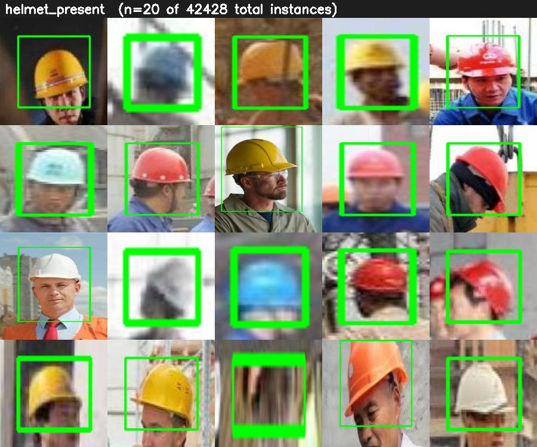
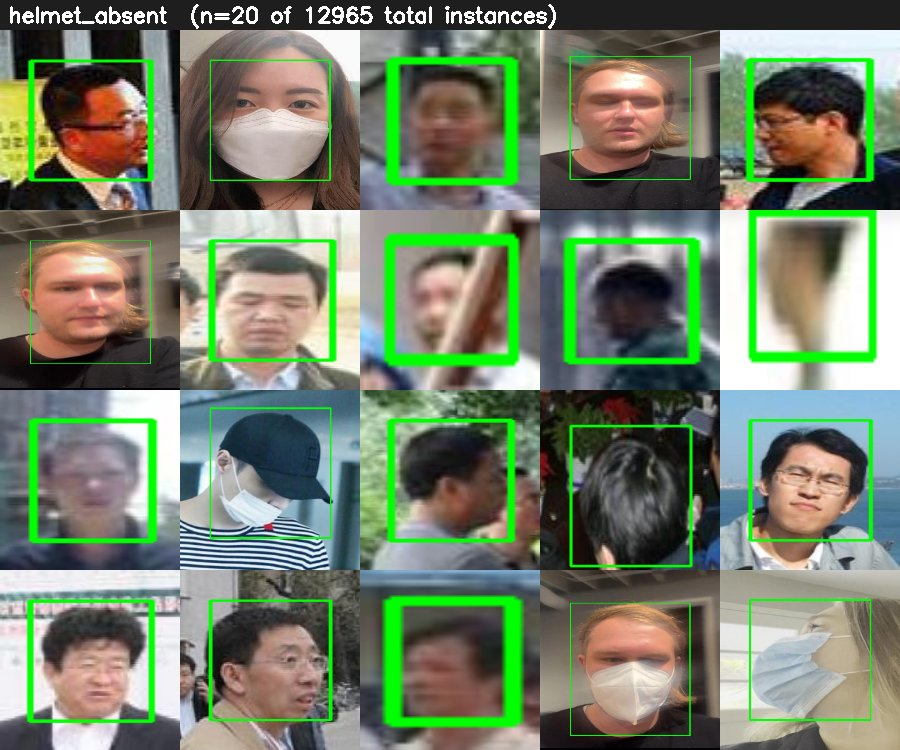
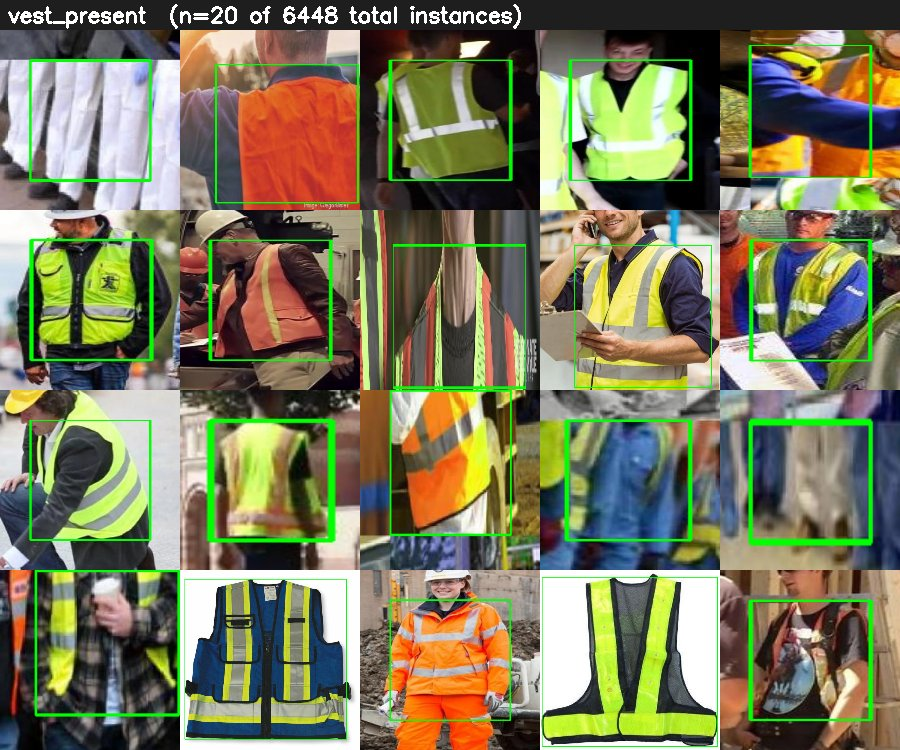
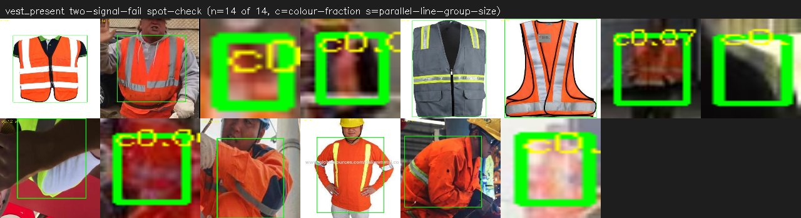
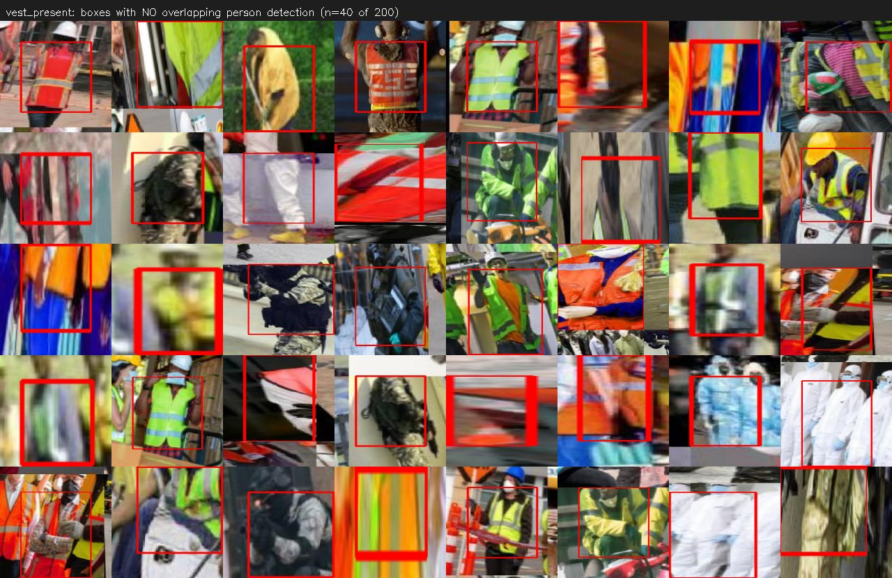
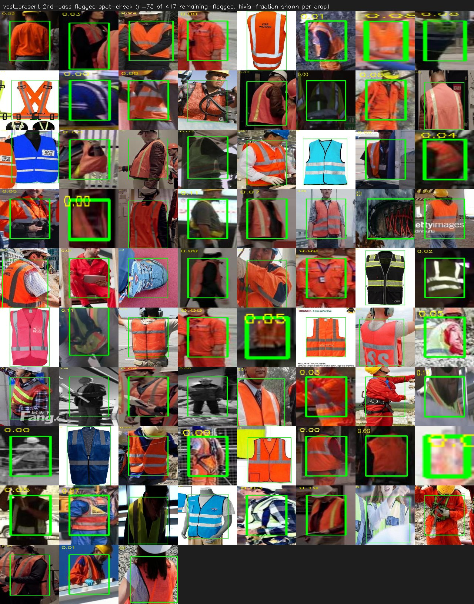
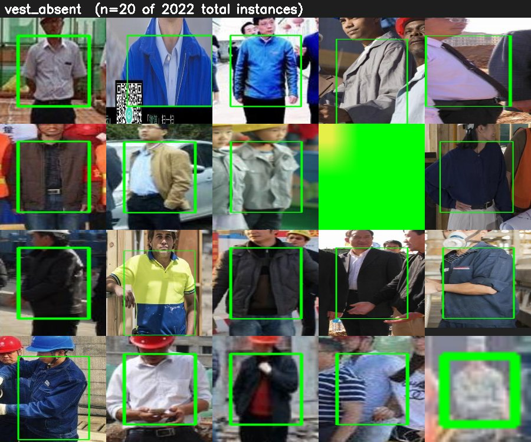
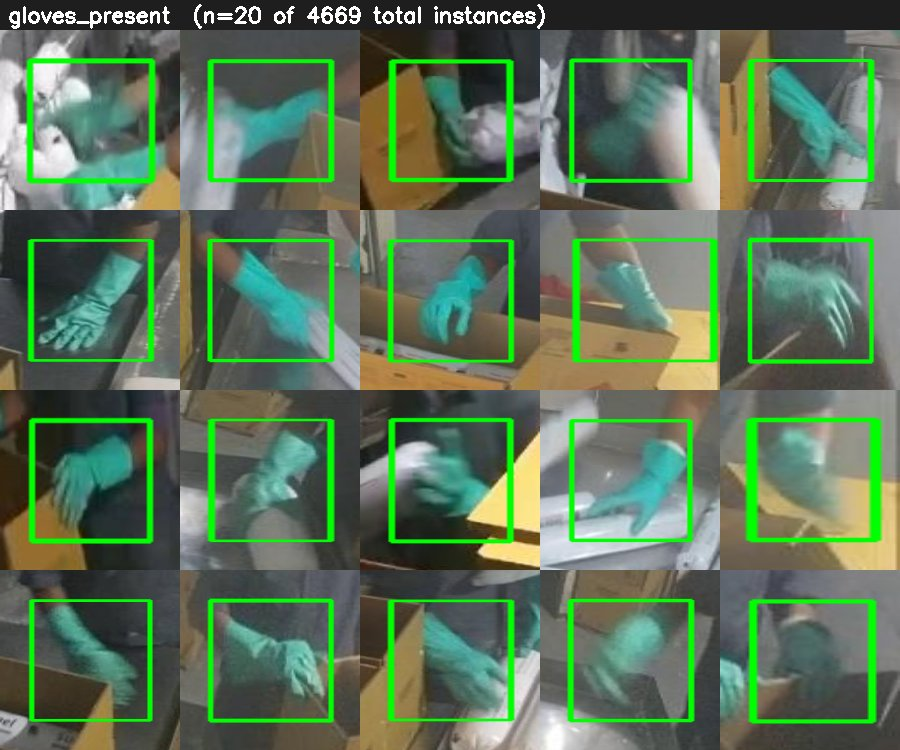
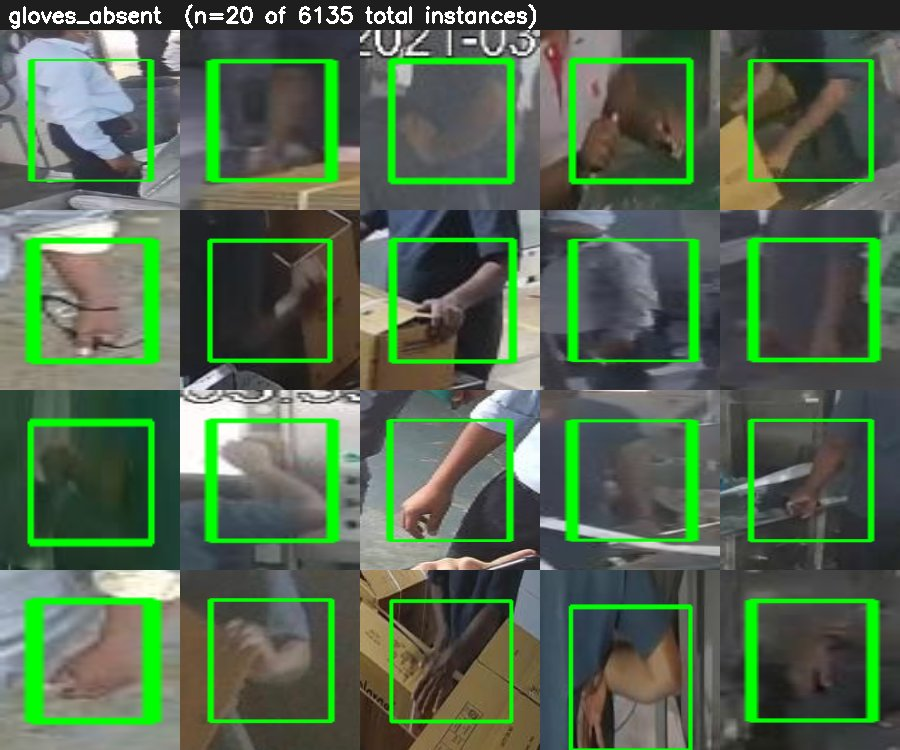
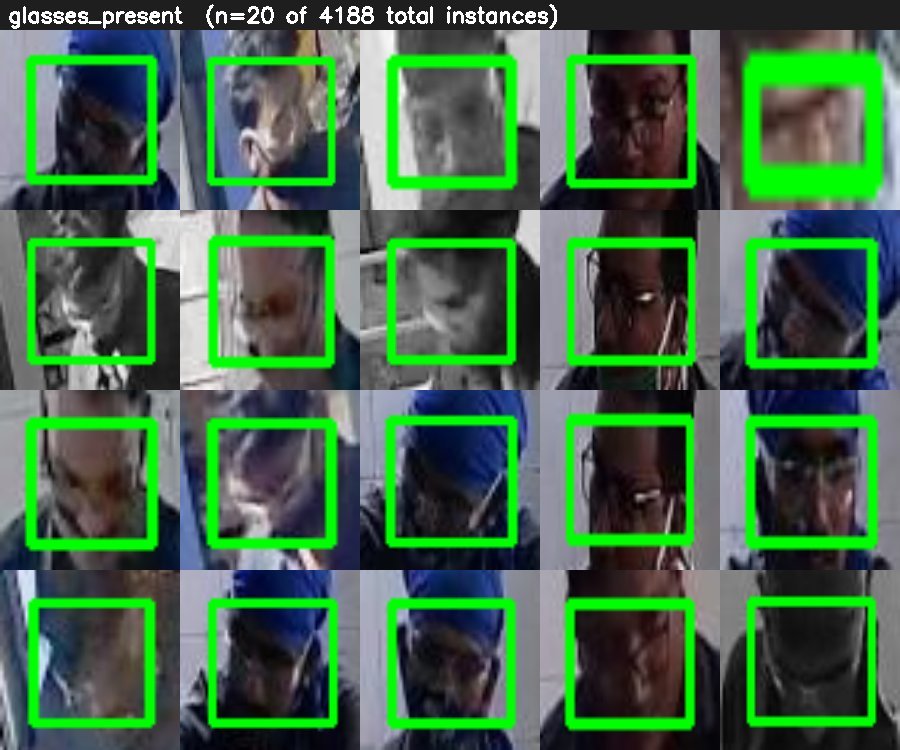

20 randomly sampled ground-truth crops per class (green box = the annotated region), pulled straight from the merged training split. Updated after the Step 1 data-safety pass: helmet_absent contamination removed, vest_present's mislabel-source isolated, glasses excluded. Nothing here has been used for training or the CCTV proxy augmentation yet.
Source: shlokraval Hardhat. Best-covered class in the merge by a wide margin.

Source: shlokraval NO-Hardhat. Full-scale YuNet face-closeup scan found 18.4% of images (906 of 4,925) were portrait/face-dataset contamination from two source videos (IMG_3099.mp4, RPReplay_Final1667001201.MP4) — confirmed those videos contributed no other class's signal, so removed wholesale. Count below reflects the cleaned class.

Source: shlokraval Safety Vest. Hi-vis colour outlier check alone found a 25.7% mislabel rate, even after widening the hue range to include safety-green — but this turned out to be mostly a defect in the check itself, not the data. Full history: (1) source-attribution isolated three naming-convention families (image 78.6% flagged, Image 40.2%, img 36.3%) carrying most of the noise — removed only their vest_present boxes, corrected rate: 10.8% (417/3,854); (2) user's own visual review of the spot-check found the colour check was missing blue/cyan/pink/black vests entirely; (3) widened hue range further (adding blue/cyan/pink) and added a colour-independent Hough-transform stripe detector (every real vest has retroreflective striping regardless of base colour) — flagging only when both signals fail. Corrected rate: 0.36% (14/3,854). This is the trustworthy number.

Every crop still flagged after BOTH the widened colour check and the stripe detector failed. c = colour hi-vis fraction, s = largest group of parallel line segments found. This tiny set is the actual candidate pool for genuine mislabels — worth a final manual glance, but two orders of magnitude smaller than the original 25.7% estimate.

This check turned out to have a real blind spot — read before trusting the 21.1% figure. It runs the project's own YOLOX person detector and flags any item box with no overlapping person detection nearby, meant to catch wrong-object mislabels like a confirmed shoe-held-in-hand example labeled vest_present. Visual review of the flagged sample below shows the overwhelming majority are genuine vests in tight torso crops, motion blur, or unusual poses the whole-body detector simply doesn't have enough of a person to find — not mislabels. Worse: a wrong object held by a detected person (like the actual shoe case) would likely still pass this check, since the box falls inside that person's expanded bounding region regardless of what's labeled. Treat this as a weak sanity check, not a mislabel detector — the two-signal check above is the number that matters. For reference, the same check across all classes: helmet_present 11.8%, helmet_absent 5.5%, vest_absent 3.0%, gloves_present 41.0%, gloves_absent 45.2%, glasses_present 2.9%, glasses_absent 1.6% — gloves' very high rate is almost certainly hand-only close-up photography with no full body in frame, the same benign explanation, not a data quality signal.

Earlier pass using only the widened-colour check (before the stripe detector was added) — kept for the record, but see the two-signal section above for the corrected, trustworthy result. This montage is what led the user to spot blue/cyan/pink/black vests being wrongly flagged in the first place.

Source: shlokraval NO-Safety Vest. ~3:1 imbalance against vest_present — thinnest class in the merge besides the fully-uncovered ones. Worth a closer look for mislabeled crops given the small sample.

Source: shlokraval Gloves. Posed/web-only — no CCTV coverage exists for this item at all.

Source: shlokraval NO-Gloves. Bare-hand regions — check these carefully, bare hands are easy to over-annotate incidentally.

Source: shlokraval Goggles / NO-Goggles. Initial coarse duplicate check looked fine, but was based on an unreliable hash — a proper DCT perceptual hash (hamming≤2) found 71.8% near-duplication in glasses_present (3,799 images → 1,072 unique clusters) and 64.5% in glasses_absent (3,261 → 1,159 clusters). Combined with a manual finding of narrow-source, balaclava-heavy samples, this is excluded from this training run entirely — two independent signals pointing the same way.
